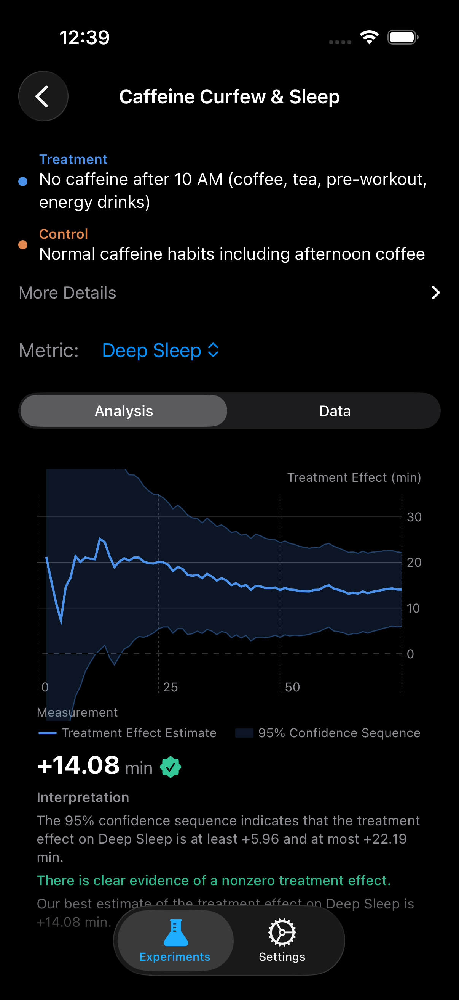

Built on the same research and technology that powers A/B testing at the world's largest tech companies — ABMe brings rigorous experimentation to a single subject: you. Design randomized N-of-1 experiments, collect data from your wearable, and find out what actually works.

There's no shortage of wellness advice. Podcasters, coaches, and influencers recommend protocols they believe in, often based on personal experience or emerging research. The challenge is that personal experience is unreliable. Without controlled comparison, it's difficult to separate real effects from personal bias or the dozen other things that changed the same week you started a new supplement.
Clinical trials address this with randomization and statistical inference, but they're designed for populations. They estimate the average treatment effect (ATE) across many people. That's valuable, but it doesn't tell you much about you specifically. Individual responses to interventions vary widely — a protocol that helps most people may not help you, and one that fails on average may work well for your particular biology.
ABMe brings this rigor to the individual through N-of-1 trials. You define a treatment and control condition, the app randomizes you across periods, your wearable collects the outcomes, and valid statistical inference gives you a real estimate of your own individual treatment effect (ITE) — not a population average, but a causal effect estimated from your own data.
The community layer makes this more useful over time. If you recommend a protocol, you can share a properly conducted experiment — not a testimonial. If you're considering trying someone else's protocol, you can run it yourself and see if the effect replicates. As more people run the same experiments, the community accumulates independent replications. Interventions that consistently produce effects across different people become easy to distinguish from those that don't.
You tried creatine for a month and your HRV "seemed better." But was it the creatine, or the extra sleep, or the season changing? Without randomization, you'll never know.
Each experimental unit is randomly assigned to treatment or control. Randomization eliminates confounders, isolating the causal effect of your intervention.
You pick when to try something and eyeball the results. No randomization means no way to separate the effect of your intervention from everything else in your life.
Design once, then tap to randomize each period. ABMe handles assignment, data collection, and analysis automatically.
Name your experiment. Define treatment and control. Pick your HealthKit metrics, measurement window, and unit duration.
Tap "Start Next Unit." ABMe randomly assigns you to treatment or control. No self-selection. No bias.
Follow your assigned condition. Your wearable records metrics automatically. At the end of each unit, data flows into the experiment.
Watch the confidence interval tighten over time. When it excludes zero, you've found a real personal effect.
Your health metrics don't exist in isolation. How well you slept last night affects your resting heart rate today. Yesterday's workout intensity shapes today's HRV. These day-to-day fluctuations add noise to your experiment — making it harder to detect the signal you're looking for.
ABMe uses machine learning to account for this. It trains a model on the metrics that capture your body's daily state — how well you slept, how hard you trained, how recovered you are — to predict what your outcome would have looked like regardless of your treatment assignment. By subtracting that prediction, the noise drops and the confidence band tightens.
The result: faster answers with the same statistical rigor. This is the same augmented estimator used by the world's most sophisticated experimentation platforms — now running on your phone.
ABMe reads from Apple HealthKit, which means every device that writes health data to your iPhone is automatically compatible.
Series 4+ / SE / Ultra
Gen 3 / Gen 4
4.0 / 5.0
Forerunner / Fenix / Venu
Sense / Versa / Charge
Vantage / Grit X / Ignite
ScanWatch / Steel HR
PACE / APEX / VERTIX
Any device that writes to Apple HealthKit is supported. ABMe reads 70+ metric types directly from HealthKit — heart rate, HRV, sleep stages, blood oxygen, respiratory rate, VO2max, steps, workouts, and more. Zero manual entry.
ABMe has no backend, no accounts, and no analytics. Your experiment data never leaves your phone. We couldn't see it even if we wanted to.
All computation happens locally on your iPhone.
No servers. No databases. No cloud processing.
No sign-up. No email. No profile.
CloudKit syncs only between your own devices.
ABMe isn't just a personal tool. When you share your results, you contribute to a growing body of independent evidence. Followers can replicate your experiment with a single tap — no setup, no configuration. Over time, the community separates what works from what doesn't.
Publish your experiment as a branded result card — complete with your confidence sequence chart, effect size, and verdict. Share to Instagram, Twitter, iMessage, or anywhere.
See someone's results and want to try it yourself? Tap "Replicate" to download their experiment template pre-configured. Just hit Start and begin your own trial. No setup required.
As more ABMembers run the same experiment, we aggregate replications. "42 people tried this. 71% found a significant effect on deep sleep." That's a decentralized clinical trial.
Private beta via TestFlight. Free. Statistically rigorous.
Request Early Access